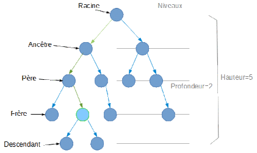
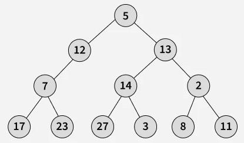
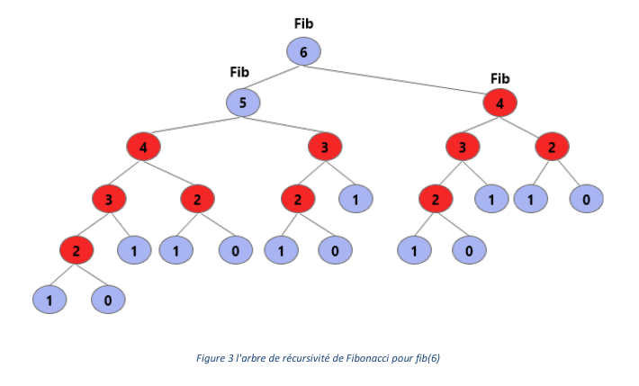

Un arbre binaire est une structure qui permet d’organiser des éléments de manière hiérarchique,
un peu comme un arbre avec des branches. Chaque élément, appelé nœud,
peut être relié à deux autres éléments au maximum : un à gauche et un à droite.
Imaginez un arbre généalogique. Une personne est au sommet : c’est la racine.
Elle peut avoir deux enfants, puis chacun de ces enfants peut aussi en avoir deux, et ainsi de suite.
Chaque personne correspond à un nœud, et les liens entre elles représentent les branches de l’arbre.
Dans un arbre binaire, on part toujours de la racine, puis on descend vers les enfants.
Les nœuds qui n’ont pas d’enfants sont appelés des feuilles.
Cette organisation permet de structurer les données de façon claire et logique.
En informatique, les arbres binaires sont très utilisés pour rechercher, trier et stocker des données efficacement.

Arbre binaire : racine, nœuds et feuilles
Par exemple, en langage C, une représentation d'un arbre binaire avec des valeurs entières peut être :
Les arbres binaires de recherche sont un type particulier d’arbre binaire qui respecte une règle importante.
Pour chaque nœud :
Les valeurs plus petites ou égales sont placées dans le sous-arbre gauche
Les valeurs strictement plus grandes sont placées dans le sous-arbre droit
Cette règle permet de rechercher rapidement une valeur dans l’arbre.
Représentation d'un arbre binaire de recherche
Par exemple, si la valeur 7 est la racine, toutes les valeurs inférieures à 7 seront placées à gauche,
et toutes les valeurs supérieures à 7 seront placées à droite.
Chaque sous-arbre respecte exactement la même règle.
Les parcours d’un arbre binaire
Parcourir un arbre binaire signifie visiter tous ses nœuds dans un certain ordre.
Les parcours permettent d’afficher, de trier ou de traiter les données contenues dans l’arbre.
1. Parcours en profondeur
Il existe trois parcours en profondeur :
Parcours préfixe : Racine → Gauche → Droite
Parcours infixe : Gauche → Racine → Droite
Parcours postfixe : Gauche → Droite → Racine
Parcours en profondeur : préfixe, infixe, postfixe
Le parcours infixe est particulièrement important pour les ABR,
car il permet d’afficher les valeurs dans l’ordre croissant.
2. Parcours en largeur
Le parcours en largeur ou encore BFS en anglais (Breadth First Search) consiste à visiter les nœuds niveau par niveau,
de gauche à droite. Il utilise généralement une file .

Arbre binaire de recherche parcourue en largeur
Explication du parcours en largeur avec l'exemple :
Donc premièrement on va enfiler la racine qui est 5 ensuite on la visite en la défilant de la file.
On enfile les fils gauche et droit s’ils ne sont pas vides (ici 12 et 13), puis on défile le premier élément (12)
et on répète le même processus jusqu’à parcourir tout l’arbre niveau par niveau.
Résultat : 5,12,13,7,14,2,17,23,27,3,8,11
Principales utilisations des arbres binaires
Les arbres binaires sont utilisés en informatique pour structurer des données
lorsqu’une organisation hiérarchique est nécessaire.
Leur forme permet de représenter naturellement des relations entre éléments
et de traiter les données de manière progressive.
1. Représentation d’expressions arithmétiques
Les arbres binaires sont très utilisés pour représenter des expressions mathématiques.
Dans ce cas, chaque nœud interne correspond à un opérateur
et chaque feuille correspond à une valeur.
Par exemple, l’expression (a + 2) * (b - 5) peut être représentée
sous forme d’arbre binaire.
Cette représentation permet ensuite d’évaluer l’expression facilement
à l’aide des parcours postfixes ou préfixes.
Cette méthode est largement utilisée dans les compilateurs et les interprètes
pour analyser et calculer des expressions.
2. Arbres de décision
Les arbres binaires permettent également de représenter des choix successifs.
Chaque nœud représente une question ou une condition,
et chaque branche correspond à une réponse possible.
Par exemple, dans un programme, un arbre binaire peut décider
si un utilisateur a accès ou non à une fonctionnalité
selon plusieurs conditions successives.
Ce type d’arbre est souvent utilisé dans les jeux vidéo, les systèmes experts et dans certains algorithmes d’intelligence artificielle.
3. Compression et codage des données
Les arbres binaires sont aussi utilisés dans les algorithmes de compression,
comme le codage de Huffman.
Dans ce cas, chaque caractère est représenté par un chemin dans un arbre.
Les caractères les plus fréquents sont placés plus près de la racine,
ce qui permet de réduire la taille globale des données à stocker ou transmettre.
4. Optimisation des algorithmes récursifs
Les arbres binaires sont très utiles pour représenter et comprendre
le fonctionnement des algorithmes récursifs.
Chaque appel récursif peut être vu comme un nœud,
et les appels suivants forment des sous-arbres.
Par exemple, lors du calcul de la suite de Fibonacci avec une fonction récursive,
le même calcul peut être effectué plusieurs fois inutilement.
Chaque appel récursif génère deux nouveaux appels,
ce qui crée un arbre d’appels très grand et coûteux en temps.
Pour optimiser cet algorithme, on peut stocker les résultats déjà calculés
dans une structure de données, comme une liste ou un tableau.
Si un résultat est déjà présent, on ne refait pas les appels récursifs
correspondants et on évite ainsi de parcourir plusieurs fois le même sous-arbre.
Cette technique permet de réduire fortement le nombre d’appels récursifs
et d’améliorer les performances de l’algorithme.
Elle est utilisée dans de nombreux problèmes faisant appel à la récursion.

Arbre d’appels récursifs Fibonacci
Explication de l'algorithme :
On vérifie si on a parcours récursive qui est déja fait par exemple on voit que le parcours à partir de la racine 4 vient deux fois
On stocke le résultat dans une liste des parcours effectuer ainsi que des sous parcours effectuer
Si un parcours est déjà effectué, on l’ignore et on remonte dans l’arborescence.


 Vers les files
Vers les files